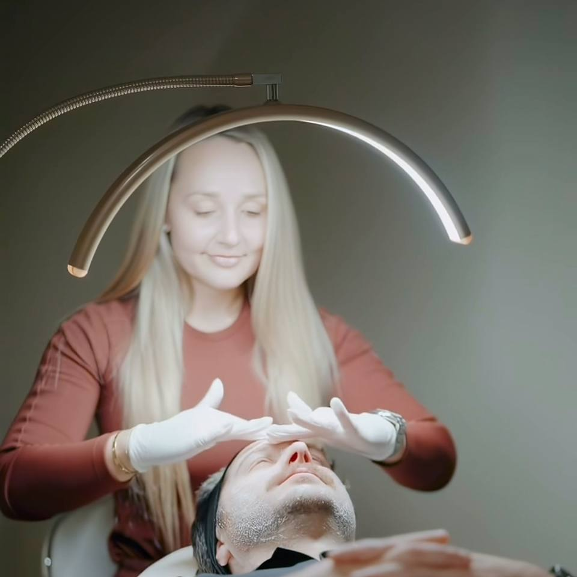

Draft for Katrina’s review. Not published.
The ABK JournalWhat to ask at your first skincare consultation
Get the most from a skincare consultation in Charlotte: what to bring, the questions to ask about your skin, treatments and products, and what comes next.
From the ABK SKIN studio
Charlotte, NC · Updated

A consultation at ABK SKIN is sixty minutes, one-on-one, all about your skin. You talk through your concerns, review the products you use now and leave with a plan. It is the best first step when you are not sure which treatment to book, when your skin has stopped responding to your routine, or when you are working toward a specific goal and want a plan rather than a guess.
You will get far more from that hour if you arrive prepared. This guide covers what to bring, the questions worth asking, what a consultation can and cannot do, and how to book an in-studio or virtual consultation with ABK SKIN in Charlotte.
In short
- The Skin Consultation is 60 minutes in person at the studio. No price is listed online, so check current terms when you book.
- A virtual consultation is also available by phone or video for $100, and the fee is applied toward any products or treatments you purchase.
- Bring your products, a short skin history and your calendar.
- Ask about priorities, timelines, downtime and home care, not only which facial to book.
- A consultation does not replace a dermatologist for new or changing spots or severe acne.
Why start with a consultation
It is tempting to skip straight to booking a facial. Sometimes that is the right call. If you already know you want a Platinum HydraFacial or The Basic B Facial, go ahead. But a consultation is worth it when:
- You have tried a lot and nothing sticks. Your routine may be working against you, and it is hard to see that from the inside.
- You have more than one concern, such as breakouts and dark marks, or fine lines and sensitivity, and you are not sure what to tackle first.
- You are planning toward a date, like a wedding, and need a timeline.
- You are considering a series, such as Microneedling or the BioRePeel Brightening Facial, and want to understand the commitment.
- You are new to professional skincare and want someone to explain it in plain English.
At ABK SKIN, the consultation follows the same thinking as every treatment: analyze your skin first, then correct, build and maintain. The consultation is where the "analyze" step gets the most time.
What to bring
Your current products
Bring them, or photos of the front and back labels. The consultation includes a review of what you are already using. That covers cleansers, toners, serums, spot treatments, moisturizers, sunscreen, eye creams and makeup. Include the things you only use sometimes, like a scrub or a mask, because those can matter just as much.
A short history
Write down past treatments, peels, laser or injectables and roughly when you had them, plus any prescriptions, past or present. Note anything that has irritated your skin before, including ingredients you suspect.
Your calendar
If you have an event coming up, say so. Some treatments, such as the ABK Hydra-Peel, are best booked one to two weeks ahead, and The Perfect Derma Peel can mean up to a week of peeling. Our guide to booking a facial before an event covers timing.
Photos, if your skin changes
If your skin looks different from day to day, or flares at certain times of the month, bring a few photos taken in good light so your provider can see the pattern.
Your budget and time
There is no wrong answer here. Knowing what you want to spend and how often you can come in helps your provider build a plan you can actually keep, whether that is a monthly facial, a series or mostly home care.
Questions worth asking
About your skin
- What do you see as the main thing to work on first?
- What skin type do you think I have, and is my skin dehydrated, sensitized or congested right now?
- Is anything in my current routine working against me?
- What should I expect to change, and over what timeline?
- What might be triggering my breakouts, redness or dullness?
About treatments
- Which treatment would you start with, and why?
- Is this a one-off appointment or a series? BioRePeel, for example, is recommended as three to four treatments spaced 10 to 14 days apart.
- What is the downtime, and what should I avoid before and after?
- How would you sequence treatments if I have more than one goal?
- Would a membership make sense for how often you recommend I come in?
About products
- Which products would you add, and which would you remove?
- In what order should I apply everything, morning and night?
- Is there a strength or formulation that suits me better? Some products in the ABK shop come in more than one, such as Retinol Complete 0.5 and 1.0. Our guide to choosing a product size or formulation explains the options.
- How should I introduce new products without irritating my skin?
- Do I really need every product, or what are the essentials?
About your plan
- When should I come back?
- How will we know if it is working?
- What should I do if my skin reacts?
What happens during the consultation
Expect a relaxed, private conversation in a treatment room at the studio, booked with Katrina or McKensi. Your provider will look closely at your skin, talk through your history and goals, and go through your products with you. Then you will leave with a personalized plan, which may include in-studio treatments, home care or both.
You do not need to buy anything on the day. The plan is yours to take home and think over.
What a consultation is not
An esthetician consultation does not replace a visit to a dermatologist. Estheticians do not diagnose medical conditions or prescribe medication. If a spot is new, changing, bleeding or not healing, or your acne is severe or painful, ask whether you should see a doctor as well. ABK SKIN can work alongside medical care, so tell your provider what you have been prescribed. Katrina works with a medical director, but the consultation itself is a skincare appointment.
In-studio or virtual?
In-studio Skin Consultation
The Skin Consultation is 60 minutes in person at the studio inside Salon Lofts on Metropolitan Avenue in Charlotte. In the booking menu, it is listed in every category as "Consultation." No price is listed online, so check the current terms when you book. Being in person means your provider can look at your skin closely under good light.
Virtual skin consultation
Can't make it to the studio? The virtual skin consultation is the same one-on-one conversation by phone or video. It is 60 minutes and $100, and your consultation fee is applied toward any products or treatments you purchase. It suits clients outside Charlotte or anyone with a packed schedule.
After your consultation
- Start slowly. Introduce new products one at a time so you can see what is helping.
- Book your first treatment while the plan is fresh.
- Take a "before" photo in consistent light so you can track progress honestly.
- Keep notes on how your skin responds and bring them to your next appointment.
If you would like a head start, the Skin Care Quiz asks a few questions about your skin and suggests where to begin. It is not a replacement for a consultation, but it is a useful warm-up.
The takeaway
A consultation is the fastest way to stop guessing. Bring your products, your history and your calendar, ask about priorities and timelines as well as treatments, and leave with a plan built around your skin. When you are ready, book a Skin Consultation or a virtual consultation. New to ABK SKIN? Read the first visit guide before you come in.
Frequently asked questions
How long is a skincare consultation at ABK SKIN?
Both the in-studio Skin Consultation and the virtual consultation are 60 minutes.
How much does a consultation cost?
The virtual consultation is $100, and the fee is applied toward any products or treatments you purchase. No price is listed online for the in-studio consultation, so check the current terms when you book.
Do I need a consultation before my first facial?
No. You can book most facials directly. A consultation is helpful if you are unsure where to start, have several concerns or are planning toward an event.
What should I bring to a skin consultation?
Your current products or photos of the labels, a short history of past treatments and prescriptions, and your calendar if you have an event coming up.
Should I wear makeup to my consultation?
It helps your provider see your skin if you arrive with clean skin or minimal makeup. If you come straight from work, that is fine too.
Who will I see?
Consultations are booked with the ABK SKIN team, Katrina or McKensi, in a private treatment room at the studio.
Can an esthetician diagnose skin conditions?
No. Estheticians do not diagnose or prescribe. If you have a new or changing spot, or severe or painful acne, see a dermatologist or your doctor.
Questions about your skin?
Email abkskinn@gmail.com or bring them to your next appointment.